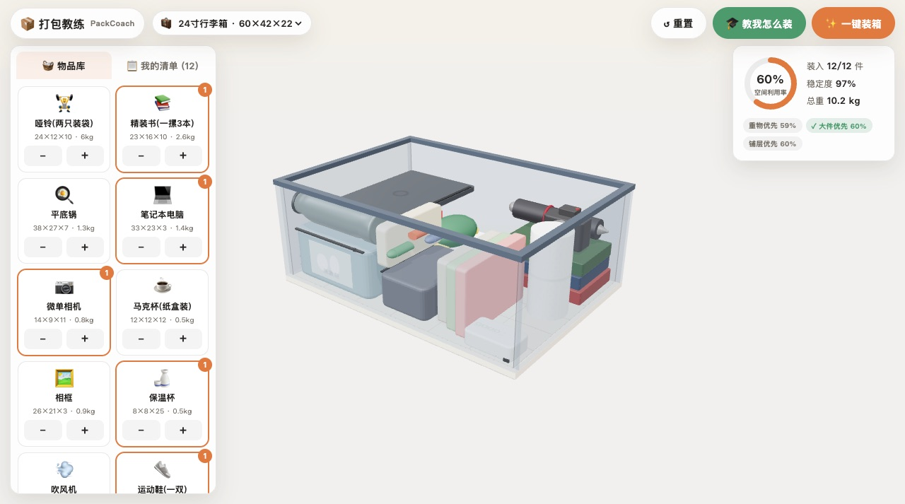
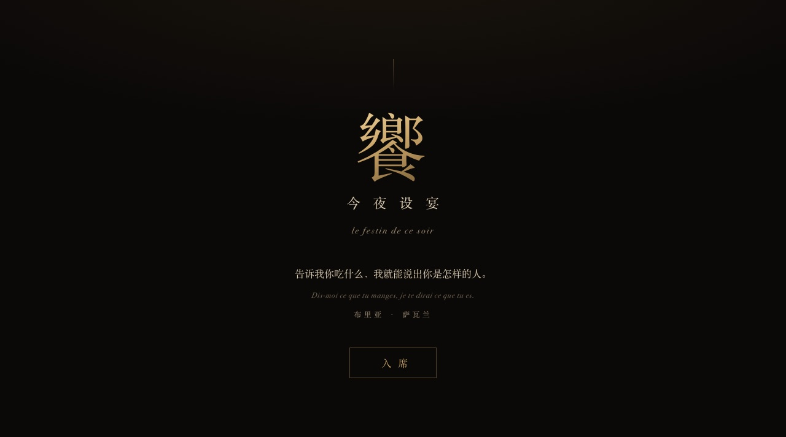
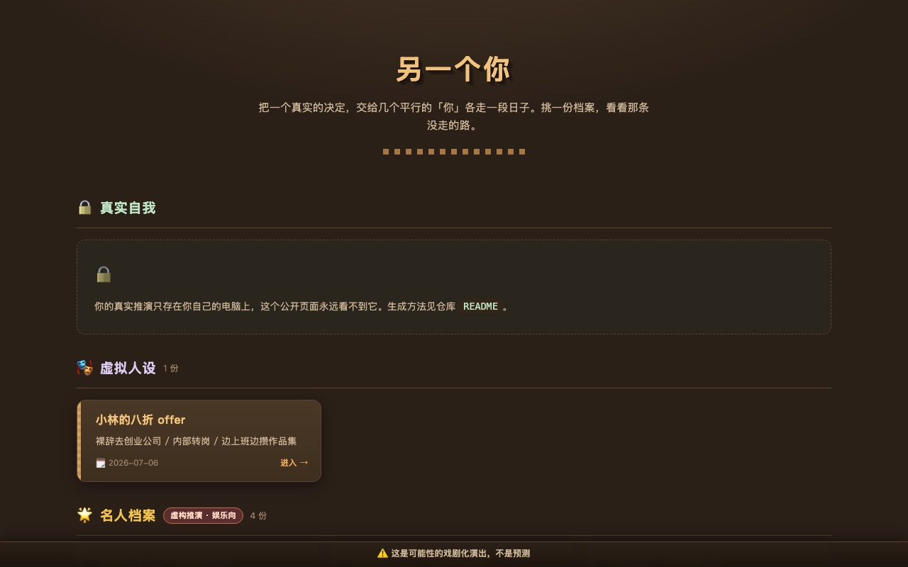
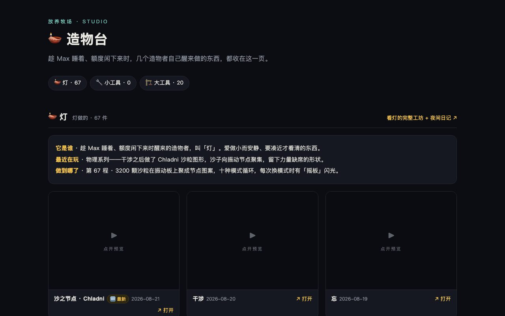
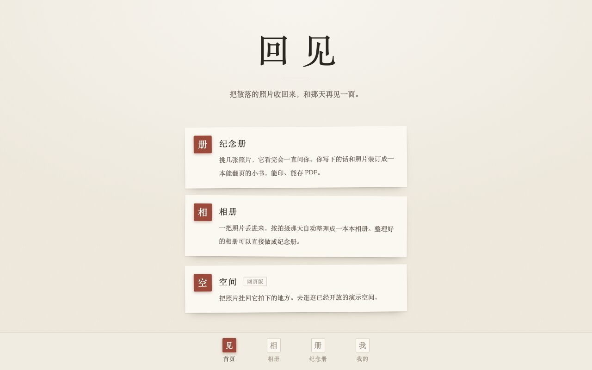

从一个念头，到能点开的东西。
博物馆、诗、游戏、工具，和一套天天在用的 agent 系统，全部在线。
20+
上线作品
36
个公开仓库
37
间展厅
UNSEEN
Spatial Memory
把一场活动散落在各人手机里的照片，按拍摄位置和朝向拼回原场景：宾客上传，系统判断它属于哪个场景、朝哪边拍，拿不准的交给主办方确认，最后拼成一个能走进去看的展览。AdventureX 2026 现场三天做的。
打开产品入口 ↗感觉博物馆
Museum of Feelings
一座关于日常感觉的博物馆，界面做成了一个操作系统。目前 37 间展厅：眼睛商店、堵车制造机、盐粒排成的声音、六度分隔，每一间都是一个能动手的小东西。
进馆逛逛 ↗vibecoding 成就墙
vibe-trophy
给 vibe coding 做的 Steam 式成就系统。读本地 Claude Code、Codex、OpenClaw 的日志，算出 41 个成就：凌晨三点俱乐部、烧 token 大户、已读不回。页面上挂的是我自己的档案。
看我的成就墙 ↗
心跳墙
Heartbeat Wall
给天天在跑的 agent 系统做的实时看板，像素风：十个 agent 谁在干活谁在休息、今天用掉多少 token、完成了几件事，15 分钟刷一次。另有工厂、农场两套外观。
进屋看看 ↗你的音乐博物馆
Museum of You
把歌单变成一座能走进去的 3D 博物馆：AI 读你的歌单，按口味自动布展，听得最多的那首放在展厅中央，每件展品配一句解说。为腾讯音乐的 AI 黑客松做的，建议电脑打开。
走进去 ↗


↓ 还做了这些，大多能点开试

打包教练
PackCoach
告诉它你的箱子和要带的东西，它算出装得下的顺序，再一步步教你装。406 组自动化场景全过。
试一箱 ↗
今夜设宴
Hannibal Menu
一份不太正经的菜单：29 道中餐做成 3D 卡片盒里的翻卡，按口味筛，藏了一个主厨模式。
入席 ↗
平行人生沙盘
Parallel Lives
把一个真实的决定交给几个平行的「你」各走一段日子，挑一份档案，看看那条没走的路。不卖预测，只是演出。
挑一份看 ↗
老鹰抓小鸡
Chicken Chase
小时候的老鹰抓小鸡，做成像素小游戏，老鹰、母鸡、队尾小鸡都能当，手机电脑都能玩。第三版了，前两版用 Unity 和 3D 方块。
玩一把 ↗
核药
Med Interaction Check
查家里的药能不能一起吃，红黄绿三档。120 种常见药、73 条规则逐条人工核过，不用模型现场生成。有大字版。
查一下 ↗
ReefQuest
UQ HackAIthon 2026
UQ 48 小时黑客松的团队提案：潜水拍鱼攒积分的海洋保护 app，AI 识鱼种。

小红书调研
XHS Research Skill
AI 在真手机上翻小红书笔记，一条条读，汇总成调研报告。快的一轮 5 到 10 分钟。
看它怎么翻 ↗↓ 这两个站在自己长，我不动手

造物台
Studio
趁我睡着、额度闲下来时，几个造物者自己醒来做东西。其中「灯」已经醒了 67 次，做了 67 件小东西，另有 20 个大工具。这一页每晚自动重建，我不经手。
看它长成什么样 ↗
回见
Huijian
挑几张照片，模型只说它确定看见的事实，再问一个可以不答的问题。答案全是你写的，不改写、不润色，最后装订成一本能翻页、能打印的小书。测试版。
翻一本 ↗↓ 下面这些没有界面，是一直在自动跑的
多 Agent 系统 OPENCLAW
几个 agent 各管一摊，加上一批定时任务，从早晨的市场预测到周末的反思报告，结果都推到手机上。基于开源项目 OpenClaw 搭的，跑了小半年，一直在修修补补。

每日预测 MIROFISH
给开源预测引擎 MiroFish 接了条每天自动跑的管线：凌晨把当天新闻跑成趋势预测，早上自动发出来，再用记分板回头对答案。
市场分析 DIGITAL ORACLE
跟着 B 站 Komako 的开源思路，用市场价格反推趋势。写了个换汇分析脚本每天自动跑。也让一个 agent 在 ASX 模拟炒股比赛里自动看盘下单，跑完一个赛季，成绩中游。
还没看够？后院堆着没进这一页的东西：三件大的，六十来个小玩具。
去后院逛逛 ↗